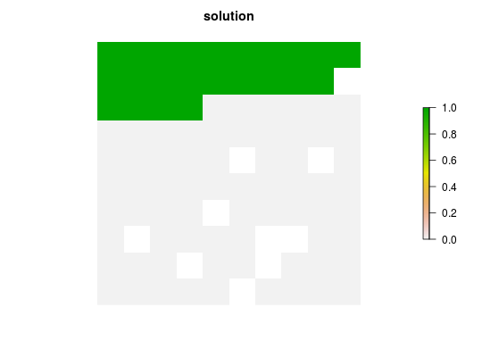

Set an objective to find to find the solution that fulfills as many targets as possible while ensuring that the cost of the solution does not exceed budget and that all constraints are met. This objective was inspired by the conservation problem defined in Cabeza and Moilanen (2001).
add_max_features_objective(x, budget)
| x |
|
|---|---|
| budget |
|
A problem objective is used to specify the overall goal of the conservation planning problem. Please note that all conservation planning problems formulated in the prioritizr package require the addition of both objectives and targets. Failing to do so will return a default error message when solving.
The maximum target coverage problem is a hybrid between the minimum set and maximum cover problems in that it allows for both a budget and targets to be set. This problem finds the set of planning units that meets representation targets for the most species while staying within a fixed budget. If multiple solutions can meet all targets while staying within budget, the cheapest solution is chosen.
The maximum target coverage problem can be stated mathematically, for \(n\) planning units and \(m\) conservation features, as: $$\mathit{Maximize} \space -a\sum_{i=1}^{n} x_i c_i + \sum_{j=1}^{m}y_j \space \mathit{subject \space to} \space \space \sum_{i=1}^{n}x_i c_i \leq B \space \& \space \sum_{j=1}^{n} x_j r_{ij}\geq y_iT_i \space \forall \space i$$
where \(x_i\) is a binary decision variable specifying whether planning unit \(i\) has been selected (1) or not (0), \(y_i\) is a binary decision variable specifying whether the target for species \(i\) should be met, \(c_i\) is the cost of planning unit \(i\), \(r_ij\) is the representation level of feature \(i\) in #' planning unit \(j\), \(B\) is the budget, and \(T_i\) is the target for feature \(i\). Finally, the factor \(a\) is chosen so that the first term of the objective function is much smaller than #' the second. This ensures that the reserve cost only plays a role in distinguishing between solutions that meet the same number of targets.
objectives, constraints,
problem, targets.
# load data data(sim_pu_raster, sim_features) # create problem p <- problem(sim_pu_raster, sim_features) %>% add_max_features_objective(5000) %>% add_relative_targets(0.1) %>% add_binary_decisions() # solve problem s <- solve(p)#> Optimize a model with 6 rows, 95 columns and 545 nonzeros #> Variable types: 0 continuous, 95 integer (95 binary) #> Coefficient statistics: #> Matrix range [2e-01, 2e+02] #> Objective range [1e-10, 1e+00] #> Bounds range [1e+00, 1e+00] #> RHS range [5e+03, 5e+03] #> Found heuristic solution: objective 5 #> #> Explored 0 nodes (0 simplex iterations) in 0.00 seconds #> Thread count was 1 (of 4 available processors) #> #> Solution count 1: 5 #> Pool objective bound 5 #> #> Optimal solution found (tolerance 1.00e-01) #> Best objective 5.000000002557e+00, best bound 5.000000009723e+00, gap 0.0000%# plot solution plot(s, main = "solution")